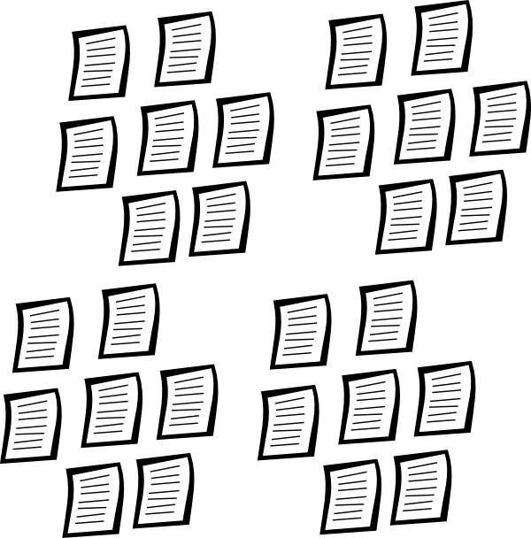
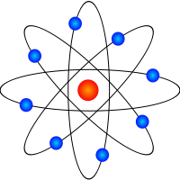
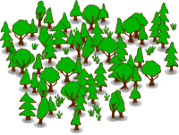

Your browser doesn't support the features required by impress.js, so you are presented with a simplified version of this presentation.
For the best experience please use the latest Chrome, Safari or Firefox browser.
Partridge: An Intelligent Literature Analysis And Recommendation
Suite
“...there have been an estimated 15 million medical academic articles
published so far, and 5000 journals published every month... picking out
what’s relevant is a gargantuan task.”
Ben Goldacre, Bad Science,
2008, p97
That's where
Partridge
- Papers go in...
 ...Partridge
analyses them...
...Partridge
analyses them...-
...and helps researchers find relevant
information more quickly...
How it works
Partridge processes papers in a three part process...
Upload and Convert...
- Acceptable paper formats are uploaded: PDF and SciXML.
- PDF files are converted to SciXML using PDFx
- Sentences are split using an unsupervised machine learning
model.


Machine Learning...
- Core scientific concepts within the paper annotated on a
sentence by sentence basis using SAPIENTA.
- Annotations used to classify the paper type using Random
Decision Forest.
- (Upcoming feature) Naive Bayes Classifier used to classify
paper subject



Storage
- Annotations, sentences and classifications are saved to the
database
- PDF and XML files are retained, intermediate files are purged
- The user who uploaded the paper to the system is sent an email
alert


Core Scientific Concepts
- Identified by Dr Liakata as "...zones of
conceptualisation, reflecting the information structure and
knowledge types which constitute a scientific
investigation..."[1]
- CoreSC concepts:Hypothesis, Motivation, Goal, Object,
Background, Method, Experiment, Model, Observation, Result and
Conclusion
- Helps to us to understand the makeup of a paper and get a feel
for what it contains
Core Scientific Concepts (contd.)
An example hypothesis sentence:
We assume that, as in the HACA process, condensation is initiated
by radical formation, and then consider reactions of phenyl, naphthyl
and anthracenyl with another PAH to yield for example fluoranthene or
perylene[57].
An example background sentence:
The central issue is here the formation of polycyclic aromatic
hydrocarbons (PAHs), which are the main constituents of soot; the PAHs
are also health hazards since they are carcinogenic[57].
Partridge provides a query interface.
- Context sensitive full text search.
- Filter by Paper Type:- Research, Review, Case Study
- Paper Profile page - details CoreSC makeup of a paper.
Farnsworth Query Interface